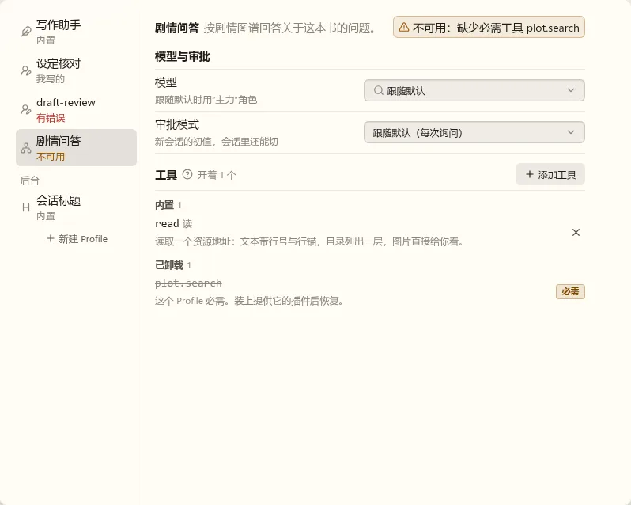
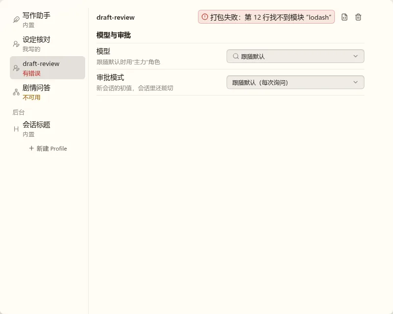
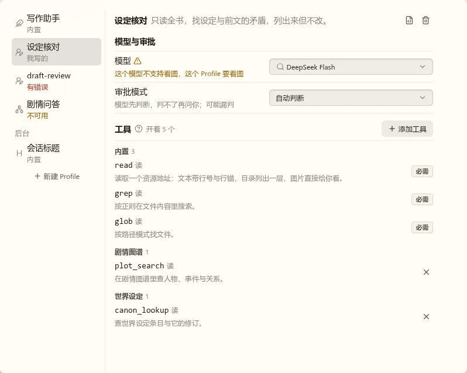
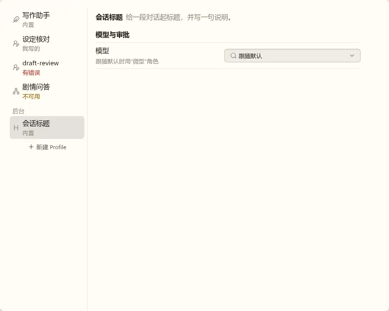
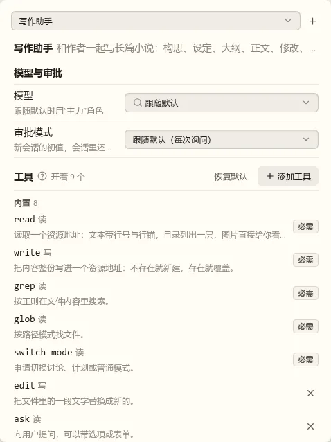
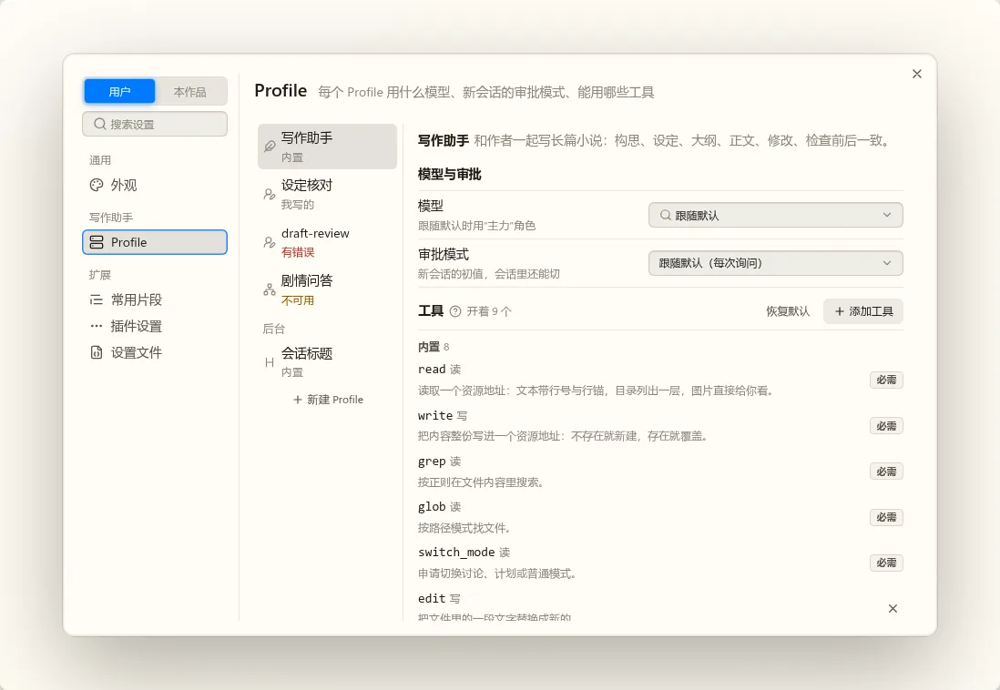
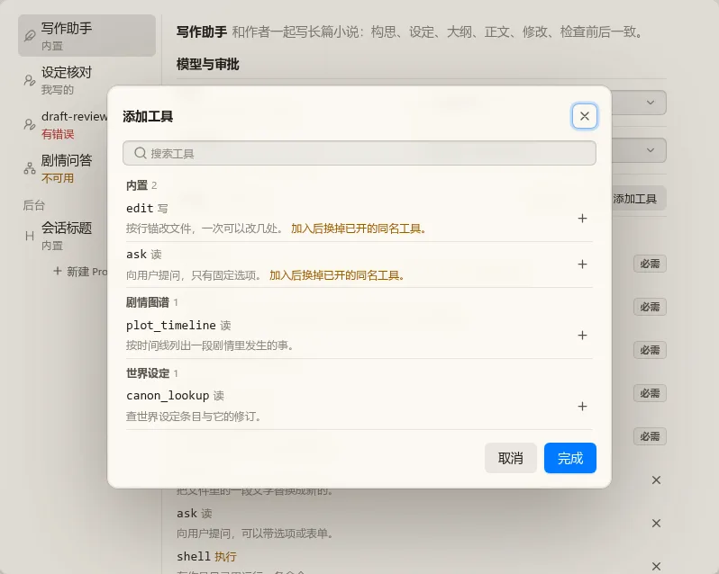
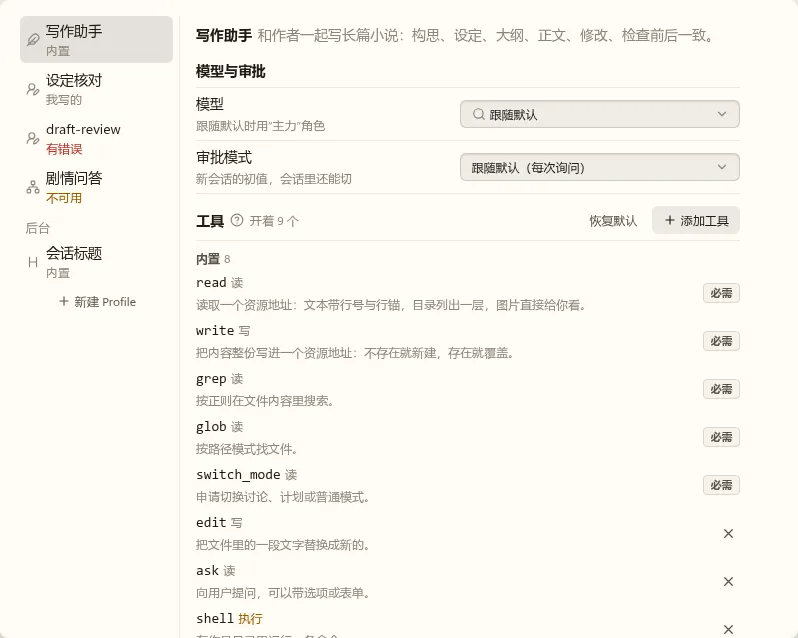

t05 Profile 设置页
都是静态稿，用真实的 nb-ui 组件和主题，数据是写死的样本。第 2 轮按你第 1 轮的备注改了提示、头部和工具一节，下面两题确认这些改法。
待定提示和头部这样改，可以吗
规范写的是状态变化不推动周围内容（ui-development-spec.md 的“几何、排版与动效”）。现有页面有两处做法，直接照用，不再用会占一整行的横幅：
- Profile 级的问题（缺必需工具、打包失败）：照设置窗口标题区的“设置文件格式有误”，一个控件高的淡底块，放在头部这一行右边。说明让位，一行放不下时截断，悬停看全文。
- 字段级的问题（模型不满足要求）：照设置行的状态图标，标题后一个图标；说明行换成警告文字。这一行本来就是两行，换字不改高度。审批模式选“自动判断”“全部放行”时的后果说明也放说明行。
- 头部：名称和说明压成一行，高度等于一个小号控件。key 和来源收进说明的悬停提示（来源左栏已经写了）。“打开文件”“删除”改成图标按钮。
- 去掉：后台 Profile 那句“不出现在新建会话的选择里”。左栏的“后台”分组已经说明了。
下面前四张模型、审批、工具的上下位置完全一样，可以直接比。
缺必需工具（插件 Profile）
打包失败（用户级）
没有问题；模型不满足要求
后台 Profile
页面不到 600px
待定工具按提供者分类、另外添加，这样可以吗
- 提供者：我理解成贡献这个工具的插件，名字用插件的显示名；Agent 插件自带的写“内置”，和左栏的来源同一套词。已卸载的找不到提供者，单独一组放最后。样本里的“世界设定”工具是编的。
- 页面上：只列开着的，每组写个数。必需的标“必需”，其余一个“×”，这一格定宽，文字不会跟着动。
- 添加工具：对话框同“管理模型”：搜索，按提供者分组，每行“+”，点过变“−”，“完成”时一次写入，“取消”不写。只列还没开的。
- 同名工具：
edit、ask 另一个实现的说明后面写“加入后换掉已开的同名工具”，完成时一起换。
- “下一次模型请求起生效”：收进“工具”旁边的问号提示，不常驻占位。
MCP 工具都来自同一个插件，不同服务器会挤在一组。这件事留给 MCP 那个 Work 定，这里不做。
放在设置窗口里（960×640）
工具多个提供者
添加工具
有已卸载的
已定第 1 轮
整页版式可以，提示和头部要改（见上面第一题）。工具一节选 B，只列开着的、另外添加，并按提供者分类（见上面第二题）。
第 1 轮的图：设置窗口、缺必需工具、候选 B。